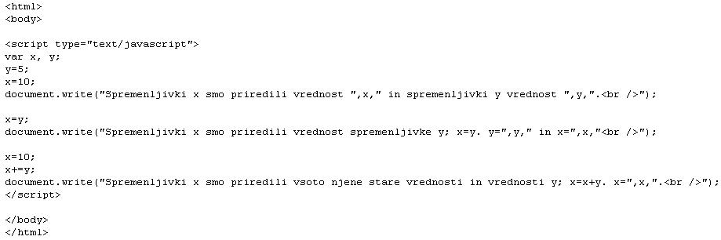
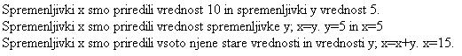
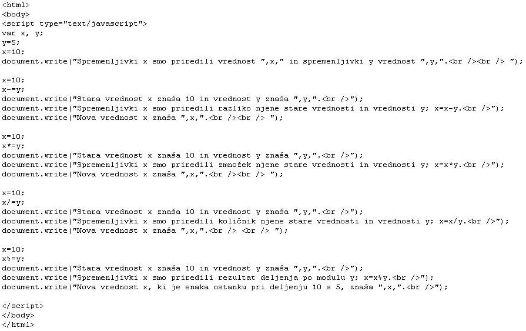
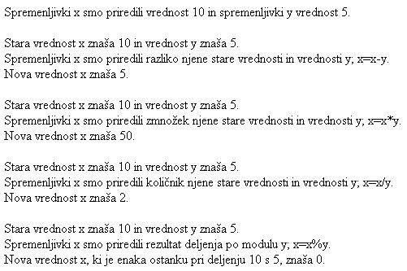

Ni težko vedeti, kako se kaj naredi. Težko je to narediti. (Sokrat)
  Slika 1 in 2: Prirejanje vrednosti spremenljivkam - koda in videz spletne strani 1. Izdelaj spletno stran, ki bo izgledala tako, kot kažeta sliki 1 in 2. Datoteko poimenuj "11apriimek.html". Ne pozabi na konènico ".html". POZOR: Najprej NATANÈNO izdelaj vajo v tej uèni enoti in jo pokaži profesorju, nato zapiši odgovore na spodnja vprašanja. 2. V kodo primera v tej uèni enoti vstavi spodaj navedene komentarje na ustrezna mesta, ki jih ti komentarji pojasnjujejo. //Spremenljivki "x" smo priredili vrednost spremenljivke "y". //Spremenljivki "x" smo priredili vrednost "10". //Deklarirali smo dve spremenljivki "x" in "y". //Spremenljivki "x" smo priredili vrednost s pomoèjo sestavljenega operatorja. //Spremenljivki "y" smo priredili vrednost "5". 3. Kodo primera v tej uèni enoti spremeni tako, da bo seštela vrednost spremenljivk "x" in "y" ter izpisala njuno vsoto.4. Kodo primera v tej uèni enoti spremeni tako, da bo zmnožila vrednost spremenljivk "x" in "y" ter izpisala njun zmnožek. 5. Kodo primera v tej uèni enoti spremeni tako, da bo delil vrednost spremenljivke "x" z vrednostjo spremenljivke "y" ter izpisala rezultat. 6. Kodo primera v tej uèni enoti spremeni tako, da bo od vrednosti spremenljivke "x" odštela vrednost spremenljivke "y" ter izpisala razliko. 1. Vprašanja za usmerjanje pozornosti in usvajanje novih besed: 1. Kaj je naloga prireditvenih operatorjev? 2. Zapiši sestavljeni operator za seštevanje in prirejanje nove vrednosti. 3. Zapiši sestavljeni operator za odštevanje in prirejanje nove vrednosti. 4. Zapiši sestavljeni operator za množenje in prirejanje nove vrednosti. 5. Zapiši sestavljeni operator za deljenje in prirejanje nove vrednosti. 6. Zapiši sestavljeni operator za deljenje po izbranem modulu in prirejanje nove vrednosti. 2. Zapiši od ene do pet kljuènih besed, ki povzemajo vsebino te uène enote. 3. Vprašanja za razmislek in povezovanje z lastno izkušnjo: 1. Zapiši oznake spremenljivk, ki smo jih deklarirali v kodi na sliki 1. 2. Zapiši vrednosti spremenljivk, ki smo jih priredili na zaèetku kode na sliki 1. 3. Katero vrednost smo v kodi na sliki 1 priredili spremenljivki x z osnovnim prireditvenim operatorjem? 4. Kateri sestavljeni prireditveni operator smo uporabili v kodi na sliki 1? 5. Katero vrednost smo v kodi na sliki 1 priredili spremenljivki x s sestavljenim prireditvenim operatorjem? 4. Domaèa naloga: 1. V zvezek prepiši misel, ki je zapisana na zaèetku uène enote z rdeèimi èrkami. Zabeleži nekaj lastnih misli, ki se ti utrnejo ob razmišljanju o njej. 2. Odgovori na vprašanja, na katere nisi uspel/a odgovoriti v šoli. 5. DODATNO DELO: 1. Izdelaj spletno stran, ki bo izgledala tako, kot kažeta sliki 3 in 4. Datoteko poimenuj "11bpriimek.html". Ne pozabi na konènico ".html".  Slika 3 in 4: Prirejanje vrednosti spremenljivkam - koda in videz spletne strani |